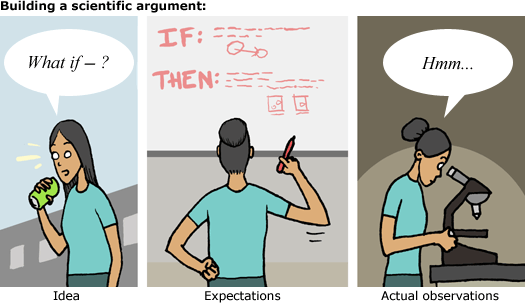
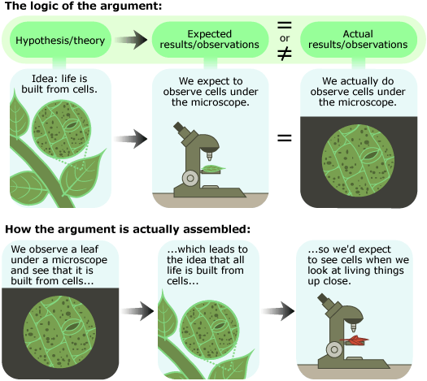

In What is science? and How science works, we've seen that science and scientists are diverse. From distant galaxies to the tiniest particles of matter, from the beginnings of time to next year's hurricane season, from the interactions of global economies to the chemical reactions within a single neuron, science investigates all natural phenomena. And scientists approach these investigations in all sorts of ways. Some depend on experiments, some on observational studies. Some lead to dead ends, some to unexpected discoveries. Some result in a technological advance, and some cast doubt on an established theory. But despite all that diversity, the aim of science remains unchanged — to build more accurate and powerful natural explanations of how the universe works — and that requires testing ideas with evidence to build scientific arguments. These arguments form the core of science.
In this case, the term argument refers not to a disagreement between two people, but to an evidence-based line of reasoning — so scientific arguments are more like the closing argument in a court case (a logical description of what we think and why we think it) than they are like the fights you may have had with siblings. Scientific arguments involve three components: the idea (a hypothesis or theory), the expectations generated by that idea (frequently called predictions), and the actual observations relevant to those expectations (the evidence). These components are always related in the same logical way:
- What would we expect to see if this idea were true (i.e., what is our expected observation)?
- What do we actually observe?
- Do our expectations match our observations?
PREDICTIONS OR EXPECTATIONS?
When scientists describe their arguments, they frequently talk about their expectations in terms of what a hypothesis or theory predicts: "If it were the case that smoking causes lung cancer, then we'd predict that countries with higher rates of smoking would have higher rates of lung cancer." At first, it might seem confusing to talk about a prediction that doesn't deal with the future, but that refers to something going on right now or that may have already happened. In fact, this is just another way of discussing the expectations that the hypothesis or theory generates. So when a scientist talks about the predicted rates of lung cancer, he or she really means something like "the rates that we'd expect to see if our hypothesis were correct."
If the idea generates expectations that hold true (are actually observed), then the idea is more likely to be accurate. If the idea generates expectations that don't hold true (are not observed), then we are less likely to accept the idea. For example, consider the idea that cells are the building blocks of life. If that idea were true, we'd expect to see cells in all kinds of living tissues observed under a microscope — that's our expected observation. In fact, we do observe this (our actual observation), so evidence supports the idea that living things are built from cells.
Though the structure of this argument is consistent (hypothesis, then expectation, then actual observation), its pieces may be assembled in different orders. For example, the first observations of cells were made in the 1600s, but cell theory was not postulated until 200 years later — so in this case, the evidence actually helped inspire the idea. Whether the idea comes first or the evidence comes first, the logic relating them remains the same.
Here, we'll explore scientific arguments and how to build them. You can investigate:
- Putting the pieces together: The hard work of building arguments
- Predicting the past
- Arguments with legs to stand on